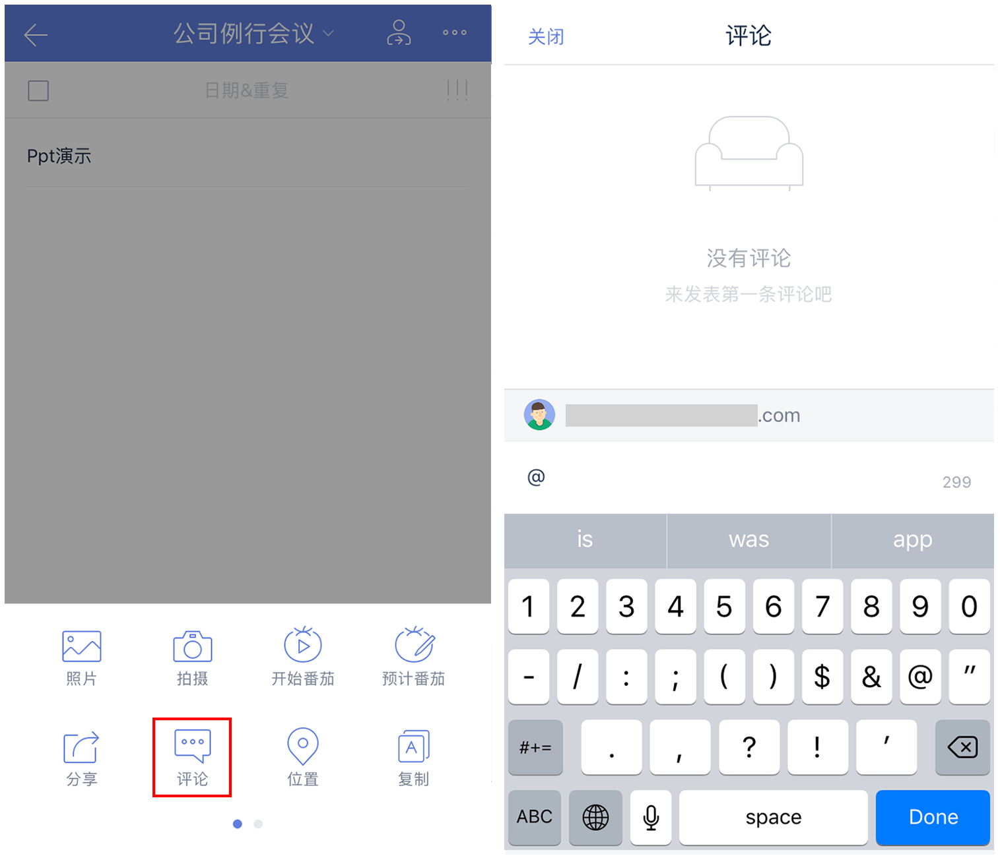
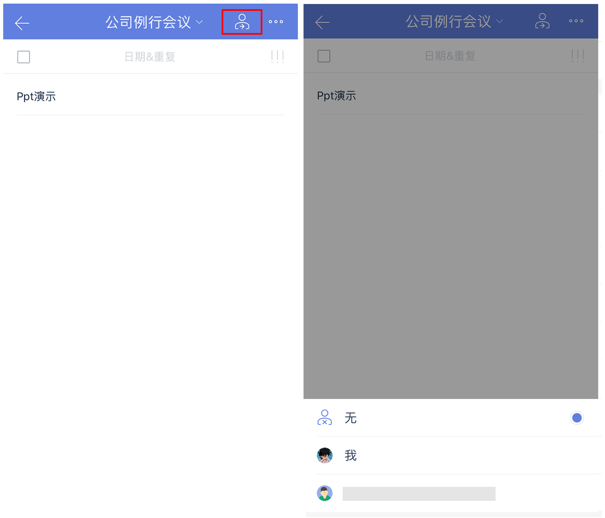

分享和协作
滴答清单不仅能记录你个人的行程安排计划，帮助你简化生活，还可以和他人共享清单，实现协作合作和内容分享。
共享清单
将清单共享给其他成员，所有成员都可以在清单内查看、编辑、添加和删除任务。
点击自己创建的清单进入清单页，点击右上角「···」-「共享清单」，选择邀请新成员即可。
邀请新成员有以下三种方式：
- 最近联系人：显示最近几个联系人，可以选择一个或者多个。
- 通过邮件邀请：输入对方的邮箱地址即可，没有注册过滴答清单的邮箱也可以。我们会将分享邀请发送至该邮箱地址，通过点击邮箱内的链接来激活共享。
- 通过共享链接：点击即创建一个链接共享清单。直接选择分享途径或者是复制链接发送给自己的好友。好友确认后会发送一个申请加入清单的通知到你的滴答清单账户。只有你确认同意该申请之后，这个清单才被成功分享。
通过链接邀请好友加入共享清单适合于以下场景：
当好友是通过QQ、微信或者微博这样的第三方账户登录时，只能通过链接邀请好友共享清单。
不知道邀请对象的滴答清单账户，或者还未注册滴答清单账户。
邀请的共享对象比较多，一个个添加邮箱比较麻烦。 在你成功分享了之后，关闭这个分享的链接，该链接就会失效，无法再被使用。
共享清单以表示，加入的共享清单者都可以对该清单内容进行编辑。在清单编辑界面或者共享界面可以看到清单共享者的用户名。
评论任务
可以将评论功能做为备注说明使用，或者是和其他成员交流表达自己的想法。
进入任务详情界面，点击右上角「···」图标，选择「评论」，输入评论的内容，点击「发送」即可添加评论。
你会在任务详情页看到最新的一条评论和总评论数量。可以长按自己的评论进行删除。
也可以直接点击留言后输入回复内容。另外你还可以在留言中直接@某人。评论成功后，你评论或者你@的对方会直接在滴答清单的通知中心收到提醒。

指派/分配任务
共享清单中的任何成员都可以对任务进行分配，指定任务的负责人或者执行者。任务的被指派人会在「通知中心」收到通知提醒。
进入任务详情界面，点击「指派」图标，选择分配的对象，一个任务只能指派给一个对象。如果不需要指定对象可以选择「无人」。

勿扰模式
共享清单的主人不想接收分配给他人的任务提醒时，可以进入该清单的编辑界面，开启勿扰模式。